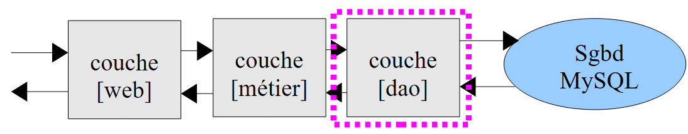

11. Calcolo delle imposte: esercizio con un servizio web e un'architettura a tre livelli
Riprenderemo l'esercizio IMPOTS (vedere le sezioni 4.2, 4.3, 6) e lo trasformeremo in un'applicazione client/server. Lo script del server sarà suddiviso in tre componenti:
- un livello denominato [DAO] (Data Access Objects) che gestirà le interazioni con il database MySQL
- un livello denominato [business] che calcolerà l'imposta
- un livello [web] che gestirà la comunicazione con i client web.
 |
Lo script client [1]:
- invia le tre informazioni ($married, $children, $salary) necessarie per calcolare l'imposta allo script del server
- visualizza la risposta del server sulla console
Lo script server [2] costituisce il livello [web] del server.
- All'inizio di una nuova sessione client, popola gli array con i dati provenienti dal database MySQL [dbimports]. Per farlo, ricorre al livello [DAO]. Gli array così costruiti vengono inseriti nella sessione client in modo da poter essere utilizzati nelle successive richieste del client.
- Quando un client effettua una richiesta, passerà le tre informazioni ($married, $children, $salary) al livello [logica di business], che calcolerà l'imposta $tax.
- Lo script del server restituirà l'imposta calcolata $tax.
11.1. Lo script client (clients_impots_05_web)
Lo script client sarà un client del servizio web di calcolo delle imposte. Invierà (POST) i parametri al server nel seguente formato:
params=$married,$children,$salary dove
- $married sarà la stringa "yes" o "no",
- $children sarà il numero di figli,
- $salary è lo stipendio del contribuente
Recupera i tre parametri sopra indicati da un file di testo [data.txt] nel formato (married, children, salary):
Lo script client
- leggerà il file di testo [data.txt] riga per riga
- invierà la stringa params=$married,$children,$salary al servizio web di calcolo delle imposte
- recupererà la risposta dal servizio. Questa risposta può assumere due forme:
- salverà la risposta del server in un file di testo [results.txt] in uno dei due formati seguenti:
Il codice dello script lato client è il seguente:
<?php
// tax client
// error management
ini_set("display_errors", "off");
// ---------------------------------------------------------------------------------
// a class of utility functions
class Utilitaires {
function cutNewLinechar($ligne) {
...
}
}
// main -----------------------------------------------------
// definition of constants
$DATA = "data.txt";
$RESULTATS = "resultats.txt";
// server data
$HOTE = "localhost";
$PORT = 80;
$urlServeur = "/exemples-web/impots_05_web.php";
// taxable person parameters (marital status, number of children, annual salary)
// were placed in the $DATA text file, one line for each taxpayer
// results (marital status, number of children, annual salary, tax payable)
// or (marital status, number of children, annual salary, error msg) are placed in
// the $RESULTATS text file, with one result per line
// utility class
$u = new Utilitaires();
// opening taxpayer data files
$data = fopen($DATA, "r");
if (!$data) {
print "Impossible d'ouvrir en lecture le fichier des données [$DATA]\n";
exit;
}
// open results file
$résultats = fopen($RESULTATS, "w");
if (!$résultats) {
print "Impossible de créer le fichier des résultats [$RESULTATS]\n";
exit;
}
// the current line of the taxpayer data file is used
while ($ligne = fgets($data, 100)) {
// remove any end-of-line marker
$ligne = $u->cutNewLineChar($ligne);
// we retrieve the 3 fields married:children:salary which form $ligne
list($marié, $enfants, $salaire) = explode(",", $ligne);
// tax calculation
list($erreur, $impôt) = calculerImpot($HOTE, $PORT, $urlServeur, $cookie, array($marié, $enfants, $salaire));
// enter the result
$résultat = $erreur ? "$marié:$enfants:$salaire:$erreur" : "$marié:$enfants:$salaire:$impôt";
fputs($résultats, "$résultat\n");
// following data
}
// close files
fclose($data);
fclose($résultats);
// end
print "Terminé...\n";
exit;
function calculerImpot($HOTE, $PORT, $urlServeur, &$cookie, $params) {
// connects client to ($HOTE,$PORT,$urlServeur)
// sends the $cookie cookie if it is non-empty. $cookie is passed by reference
// sends $params to the server
// exploits the single line returned by the server
// open a connection on port 80 of $HOTE
$connexion = fsockopen($HOTE, $PORT);
// mistake?
if (!$connexion)
return array("erreur lors de la connexion au serveur ($HOTE, $PORT)");
// protocol HTTP headers must end with an empty line
// POST
fputs($connexion, "POST $urlServeur HTTP/1.1\n");
// Host
fputs($connexion, "Host: localhost\n");
// Connection
fputs($connexion, "Connection: close\n");
// send cookie if non-empty
if ($cookie) {
fputs($connexion, "Cookie: $cookie\n");
}////if
// now we send the client instruction after encoding it
$infos = "params=" . urlencode(implode(",", $params));
// on indique quel type d'informations on va envoyer
fputs($connexion, "Content-type: application/x-www-form-urlencoded\n");
// send the size (number of characters) of the information to be sent
fputs($connexion, "Content-length: " . strlen($infos) . "\n");
// send an empty line
fputs($connexion, "\n");
// we send the news
fputs($connexion, $infos);
// the web server response is displayed
// and we take care to recover any cookie
while ($ligne = fgets($connexion, 1000)) {
// cookie - only on 1st response
if (!$cookie) {
if (preg_match("/^Set-Cookie: (.*?)\s*$/", $ligne, $champs)) {
$cookie = $champs[1];
}//if
}
// as soon as there is an empty line, the HTTP response is terminated
if (trim($ligne) == "") {
break;
}
}////while
// read line result
$ligne = fgets($connexion, 1000);
// close the connection
fclose($connexion);
// result calculation
$erreur="";
$impôt="";
if (preg_match("/^<erreur>(.*?)<\/erreur>\s*$/", $ligne, $champs)) {
$erreur = $champs[1];
} else {
if (preg_match("/^<impot>(.*?)<\/impot>\s*$/", $ligne, $champs)) {
$impôt = $champs[1];
}else{
$erreur="résultat du serveur non exploitable";
}
}
// return
return array($erreur, $impôt);
}
Commenti
Il codice dello script lato client include elementi che abbiamo già visto in precedenza:
- righe 9–15: la classe [Utilities] è stata introdotta nella Versione 3, Sezione 6
- righe 17–68: il programma principale è simile a quello della Versione 1, Sezione 4.2. Si differenzia solo nel calcolo delle imposte, riga 56.
- riga 56: la funzione di calcolo delle imposte accetta i seguenti parametri:
- $HOST, $PORT, $serverURL: utilizzati per connettersi al servizio web
- $cookie: è il cookie di sessione. Questo parametro viene passato per riferimento. Il suo valore è impostato dalla funzione di calcolo delle imposte. Alla prima chiamata, non ha alcun valore. Successivamente, ne ha uno.
- array($married, $children, $salary): rappresenta una riga del file [data.txt]
La funzione di calcolo delle imposte restituisce un array di due risultati ($error, $tax) dove $error è un possibile messaggio di errore e $tax è l'importo dell'imposta.
- Righe 70–134: Si tratta di un classico client HTTP, del tipo che abbiamo incontrato molte volte. Notare i seguenti punti:
- Riga 83: i parametri ($married, $children, $salary) vengono inviati al server tramite una richiesta POST
- Righe 89–91: Se il client ha un ID di sessione, lo invia al server
- riga 93: creazione del parametro `params`
- riga 101: il parametro `params` viene inviato
- righe 104–115: il client legge tutte le intestazioni HTTP inviate dal server fino a quando non incontra la riga vuota che segna la fine delle intestazioni. Approfitta di questa opportunità per recuperare l'ID di sessione dalla risposta alla sua prima richiesta.
- righe 123–125: elaborazione di qualsiasi riga nel formato <error>message</error>
- righe 126–128: facciamo lo stesso con qualsiasi riga del formato <tax>importo</tax>
- riga 133: viene restituito il risultato
11.2. Il servizio web di calcolo delle imposte
Qui ci interessano i tre script che compongono il server:
 |
Il progetto NetBeans corrispondente è il seguente:
 |
In [1], il server è costituito dai seguenti script PHP:
- [impots_05_entites] contiene le classi utilizzate dal server
- [impots_05_dao] contiene le classi e le interfacce del livello [dao]
- [impots_05_metier] contiene le classi e le interfacce del livello [business]
- [impots_05_web] contiene le classi e le interfacce del livello [dao]
Iniziamo presentando due classi utilizzate dai diversi livelli del servizio web.
11.2.1. Le entità del servizio web (impots_05_entities)
Il database MySQL [dbimpots] ha una tabella [impots] che contiene i dati necessari per calcolare l'imposta [1]:
 |
Memorizzeremo i dati della tabella MySQL [impots] in un array di oggetti Tranche, dove Tranche è la seguente classe:
<?php
// a tax bracket
class Tranche {
// private fields
private $limite;
private $coeffR;
private $coeffN;
// getters and setters
public function getLimite() {
return $this->limite;
}
public function setLimite($limite) {
$this->limite = $limite;
}
public function getCoeffR() {
return $this->coeffR;
}
public function setCoeffR($coeffR) {
$this->coeffR = $coeffR;
}
public function getCoeffN() {
return $this->coeffN;
}
public function setCoeffN($coeffN) {
$this->coeffN = $coeffN;
}
// manufacturer
public function __construct($limite, $coeffR, $coeffN) {
$this->setLimite($limite);
$this->setCoeffR($coeffR);
$this->setCoeffN($coeffN);
}
// toString
public function __toString(){
return "[$this->limite,$this->coeffR,$this->coeffN]";
}
}
I campi privati [$limite, $coeffR, $coeffN] saranno utilizzati per memorizzare le colonne [limites, coeffR, coeffN] di una riga nella tabella MySQL [impots].
Inoltre, il codice server utilizzerà un'eccezione personalizzata, la classe ImpotsException:
- Riga 1: la classe [ImpotsException] estende la classe [Exception] predefinita in PHP 5
- riga 3: il costruttore della classe [ImpotsException] accetta due parametri:
- $message: un messaggio di errore
- $code: un codice di errore
11.2.2. Il livello [dao] (impots_05_dao)
Il livello [dao] fornisce l'accesso ai dati del database:
 |
Il livello [dao] presenta la seguente interfaccia:
L'interfaccia IImpotsDao espone solo la funzione getData. Questa funzione inserisce le varie righe della tabella MySQL [dbimpots.impots] in un array di oggetti Tranche.
La classe di implementazione è la seguente:
<?php
// dao layer
// dependencies
require_once "impots_05_entites.php";
// constants
define("TABLE", "impots");
// -----------------------------------------------------------------
// abstract implementation
abstract class ImpotsDaoWithPdo implements IImpotsDao {
// private fields
private $dsn;
private $user;
private $passwd;
private $tranches;
// getters and setters
public function getDsn() {
return $this->dsn;
}
public function setDsn($dsn) {
$this->dsn = $dsn;
}
public function getUser() {
return $this->user;
}
public function setUser($user) {
$this->user = $user;
}
public function getPasswd() {
return $this->passwd;
}
public function setPasswd($passwd) {
$this->passwd = $passwd;
}
// manufacturer
public function __construct($dsn, $user, $passwd) {
// save parameters
$this->setDsn($dsn);
$this->setUser($user);
$this->setPasswd($passwd);
// retrieve data from SGBD
// connects ($user,$pwd) to base $dsn
try {
// connection
$connexion = new PDO($dsn, $user, $passwd, array(PDO::ATTR_PERSISTENT => true));
// read table $TABLE
$requête = "select limites,coeffR,coeffN from " . TABLE;
// executes the $requête request on the $connexion connection
$statement = $connexion->prepare($requête);
$statement->execute();
// query result evaluation
while ($colonnes = $statement->fetch()) {
$this->tranches[] = new Tranche($colonnes[0], $colonnes[1], $colonnes[2]);
}
// disconnect
$connexion=NULL;
} catch (PDOException $e) {
// return with error
throw new ImpotsException($e->getMessage(), 1);
}
}
public function getData(){
return $this->tranches;
}
}
- riga 5: l'implementazione dell'interfaccia [IImpotsDao] richiede le classi definite nello script [impots_05_entities].
- riga 11: definizione di una classe astratta. Una classe astratta è una classe che non può essere istanziata. Per poter essere istanziata, una classe deve derivare da una classe astratta. Una classe può essere dichiarata astratta perché non può essere istanziata (alcuni dei suoi metodi non sono definiti) o perché non vogliamo istanziarla. In questo caso, non vogliamo istanziare la classe [ImpotsDaoWithPdo]. Istanzieremo le classi derivate.
- Riga 11: La classe [ImpotsDaoWithPdo] implementa l'interfaccia [IImpotsDao]. Deve quindi definire il metodo getData. Questo metodo si trova alle righe 72–74.
- Riga 14: $dsn (Data Source Name) è una stringa che identifica in modo univoco il DBMS e il database in uso.
- Riga 15: $user identifica l'utente che si connette al database
- riga 16: $passwd è la password dell'utente precedente
- riga 17: $tranches è l'array di oggetti Tranche in cui verrà memorizzata la tabella MySQL [dbimpots.impots].
- Righe 45–70: Il costruttore della classe. Questo codice è già stato visto nella Versione 4, Sezione 8.2. Si noti che la costruzione dell’oggetto [ImpotsDaoWithPdo] potrebbe fallire. In tal caso viene generata un’eccezione [ImpotsException].
- Righe 72–74: Il metodo [getData] dell'interfaccia [IImpotsDao].
La classe [ImpotsDaoWithPdo] è adatta a qualsiasi DBMS. Il costruttore della classe, alla riga 45, richiede la conoscenza del nome della fonte dati (Data Source Name) del database. Questa stringa dipende dal DBMS utilizzato. Abbiamo scelto di non richiedere all'utente della classe di conoscere questo nome della fonte dati. Per ogni DBMS, ci sarà una classe specifica derivata da [ImpotsDaoWithPdo]. Per il DBMS MySQL, questa sarà la seguente classe:
class ImpotsDaoWithMySQL extends ImpotsDaoWithPdo {
public function __construct($host, $port, $base, $user, $passwd) {
parent::__construct("mysql:host=$host;dbname=$base;port=$port", $user, $passwd);
}
}
- Nella riga 3, il costruttore non richiede il nome dell'origine dati, ma semplicemente il nome della macchina host del DBMS ($host), la sua porta di ascolto ($port) e il nome del database ($base).
- Riga 4: Il nome della fonte dati per il database MySQL viene costruito e utilizzato per chiamare il costruttore della classe padre.
Si noti che per adattarsi a un altro DBMS, è sufficiente scrivere la classe appropriata derivata da [ImpotsDaoWithPdo]. In ogni caso, deve essere costruito il nome della fonte dati specifico per il DBMS in uso.
11.2.3. Il livello [business] (impots_05_metier)
Il livello [business] contiene la logica di calcolo delle imposte:
 |
Il livello [business] presenta la seguente interfaccia:
<?php
// business interface
interface IImpotsMetier {
public function calculerImpot($marié, $enfants, $salaire);
}
L'interfaccia [IImpotsMetier] espone un solo metodo, il metodo [calculateTax], che calcola l'imposta di un contribuente in base ai seguenti parametri:
- $married: una stringa "yes" o "no" a seconda che il contribuente sia sposato o meno
- $children: il numero di figli del contribuente
- $salary: lo stipendio del contribuente
Il livello [web] fornirà questi parametri.
L'implementazione dell'interfaccia [IImpotsMetier] è la seguente:
// dependencies
require_once "impots_05_dao.php";
// ------------------------------------------------------------------
// implementation class
class ImpotsMetier implements IImpotsMetier {
// dao layer
private $dao;
// object array [Slice]
private $data;
// getter and setter
public function getDao() {
return $this->dao;
}
public function setDao($dao) {
$this->dao = $dao;
}
public function setData($data){
$this->data=$data;
}
public function __construct($dao) {
// retrieve the data needed to calculate taxes
$this->setDao($dao);
$this->setData($this->dao->getData());
}
public function calculerImpot($marié, $enfants, $salaire) {
// $marié : yes, no
// $enfants : number of children
// $salaire: annual salary
// number of shares
$marié = strtolower($marié);
if ($marié == "oui")
$nbParts = $enfants / 2 + 2;
else
$nbParts=$enfants / 2 + 1;
// an additional 1/2 share if at least 3 children
if ($enfants >= 3)
$nbParts+=0.5;
// taxable income
$revenuImposable = 0.72 * $salaire;
// family quotient
$quotient = $revenuImposable / $nbParts;
// is set at the end of the limit table to stop the following loop
$N = count($this->data);
$this->data[$N - 1]->setLimite($quotient);
// tAX CALCULATION
$i = 0;
while ($i < $N and $quotient > $this->data[$i]->getLimite()) {
$i++;
}
// because $quotient has been placed at the end of the $limites array, the previous loop
// cannot exceed the table $limites
// now we can calculate the tax
return floor($revenuImposable * $this->data[$i]->getCoeffR() - $nbParts * $this->data[$i]->getCoeffN());
}
}
- Riga 2: il livello [business] richiede classi del livello [DAO] ed entità (Tranche, ImpotsException).
- riga 6: la classe [ImpotsMetier] implementa l'interfaccia [IimpotsMetier].
- Righe 9–11: i campi privati della classe:
- $dao: riferimento al livello [dao]
- $data: array di oggetti di tipo [Tranche] forniti dal livello [dao]
- Righe 26–30: il costruttore della classe inizializza i due campi precedenti. Riceve come parametro un riferimento al livello [dao].
- righe 32–61: implementazione del metodo [calculerImpot] dell'interfaccia [IimpotsMetier]. Questo metodo è stato introdotto nella versione 1 (sezione 4.2).
11.2.4. Il livello [web] (impots_05_web)
Il livello [business] contiene la logica di calcolo delle imposte:
 |
Il livello [web] è costituito dal servizio web che risponde ai client web. Ricordiamo che questi client inviano una richiesta al servizio web inviando il seguente parametro: params=married,children,salary. Si tratta di un servizio web simile a quelli che abbiamo realizzato nelle sezioni precedenti. Il suo codice è il seguente:
<?php
// business layer
require_once "impots_05_metier.php";
// error management
ini_set("display_errors", "off");
// uTF-8 header
header("Content-Type: text/plain; charset=utf-8");
// ------------------------------------------------------------------------------
// tax web service
// definition of constants
$HOTE = "localhost";
$PORT = 3306;
$BASE = "dbimpots";
$USER = "root";
$PWD = "";
// the data required to calculate the tax has been placed in the mysql table IMPOTS
// belonging to the $BASE database. The table has the following structure
// limits decimal(10,2), coeffR decimal(6,2), coeffN decimal(10,2)
// taxable person parameters (marital status, number of children, annual salary)
// are sent by the customer in the form params=marital status, number of children, annual salary
// results (marital status, number of children, annual salary, tax payable) are returned to the customer
// in the form <impot>impot</impot>
// or as <error>error</error>, if parameters are invalid
// retrieve the [business] layer in the session
session_start();
if (!isset($_SESSION['metier'])) {
// instantiation of the [dao] layer and the [business] layer
try {
$_SESSION['metier'] = new ImpotsMetier(new ImpotsDaoWithMySQL($HOTE, $PORT, $BASE, $USER, $PWD));
} catch (ImpotsException $ie) {
print "<erreur>Erreur : " . utf8_encode($ie->getMessage() . "</erreur>");
exit;
}
}
$metier = $_SESSION['metier'];
// retrieve the line sent by the client
$params = utf8_encode(htmlspecialchars(strtolower(trim($_POST['params']))));
$items = explode(",", $params);
// there must be only 3 parameters
if (count($items) != 3) {
print "<erreur>[$params] : nombre de paramètres invalides</erreur>\n";
exit;
}//if
// first parameter (marital status) must be yes/no
$marié = trim($items[0]);
if ($marié != "oui" and $marié != "non") {
print "<erreur>[$params] : 1er paramètre invalide</erreur>\n";
exit;
}//if
// the second parameter (number of children) must be an integer
if (!preg_match("/^\s*(\d+)\s*$/", $items[1], $champs)) {
print "<erreur>[$params] : 2ième paramètre invalide</erreur>\n";
exit;
}//if
$enfants = $champs[1];
// the third parameter (salary) must be an integer
if (!preg_match("/^\s*(\d+)\s*$/", $items[2], $champs)) {
print "<erreur>[$params] : 3ième paramètre invalide</erreur>\n";
exit;
}//if
$salaire = $champs[1];
// tax calculation
$impôt = $metier->calculerImpot($marié, $enfants, $salaire);
// return the result
print "<impot>$impôt</impot>\n";
// end
exit;
- Riga 4: il livello [web] necessita delle classi del livello [business]
- righe 30–40: il riferimento al livello [business] è limitato alla sessione. Se ricordiamo che questo livello [business] ha un riferimento al livello [DAO] e che quest'ultimo memorizza i dati del DBMS, possiamo vedere che:
- la prima richiesta del client attiverà un accesso al DBMS
- che le richieste successive provenienti dallo stesso client utilizzeranno i dati memorizzati dal livello [DAO]. Pertanto, non vi è alcun accesso al DBMS.
- Riga 34: Costruzione di un livello [business] che opera con un livello [DAO] implementato per il DBMS MySQL
- Righe 35–37: Gestione di un potenziale errore nell'operazione precedente. In questo caso, viene inviata al client una riga <error>message</error>.
- Riga 43: Recupero del parametro 'params' inviato dal client.
- Righe 46–49: Controllo del numero di elementi trovati in 'params'
- Righe 51–55: Verifica della validità della prima informazione
- Righe 56–60: Lo stesso per la seconda informazione
- Righe 62-66: lo stesso per la terza
- Riga 69: Il livello [business] calcola l'imposta.
- Riga 71: invia il risultato al client
Risultati
Ricordiamo che il client [client_impots_web_05] utilizza il seguente file [data.txt]:
Sulla base di queste righe (stato civile, figli, stipendio), il client interroga il server di calcolo delle imposte e scrive i risultati nel file di testo [results.txt]. Dopo l'esecuzione del client, il contenuto di questo file è il seguente:
oui:2:200000:22504
non:2:200000:33388
oui:3:200000:16400
non:3:200000:22504
oui:5:50000:0
non:0:3000000:1354938
dove ogni riga ha il formato (stato civile, figli, stipendio, imposta calcolata).